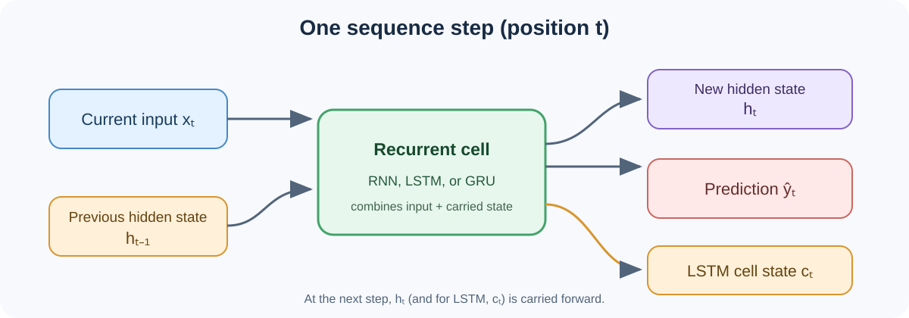
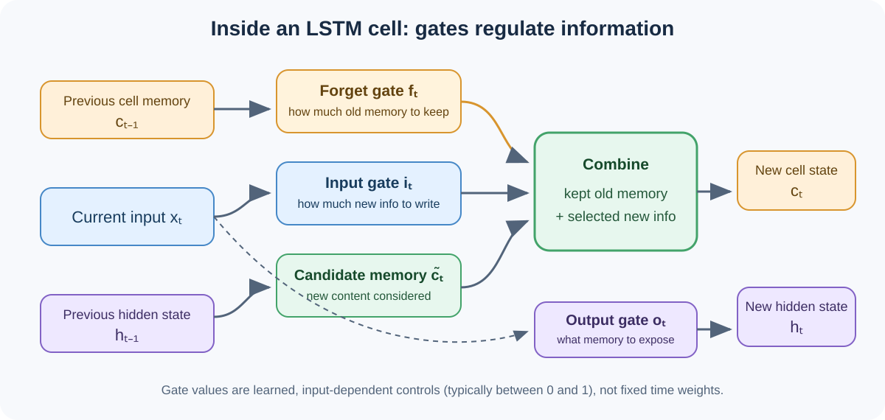
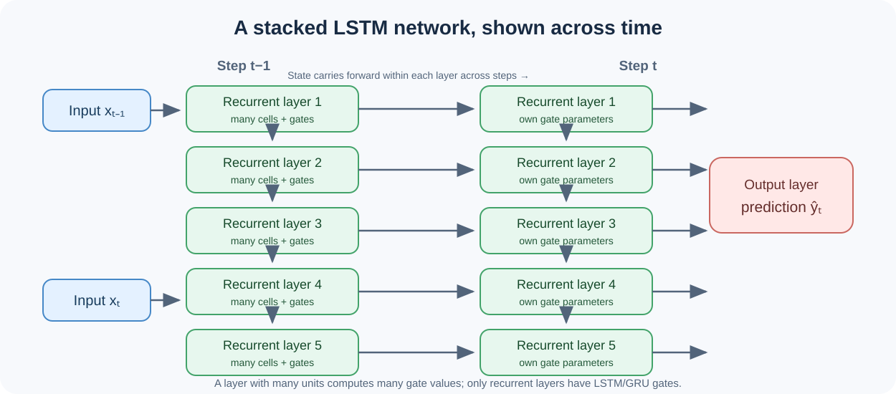

RNN, LSTM, and GRU
A visual guide to how recurrent networks carry information through a sequence, how LSTM gates regulate memory, and how training learns those gates.
1. What is a sequence “step”?
A step is one position in the sequence: one token, time point, or observation. At each step, the recurrent cell combines the current input with the state carried from the previous step. Processing a full sequence repeats this calculation at each position.

The current recurrent representation, passed onward to the next sequence step and often used by the output layer.
An additional memory stream that the LSTM carries forward and filters with gates.
2. How LSTM gates regulate memory
At each step, gates compute values—typically between 0 and 1—from the current input and previous hidden state. These values control how much information flows. A value near 1 passes more; near 0 passes less.

Forget gate fₜ: how much old cell memory to keep. Input gate iₜ: how much candidate information to add. Output gate oₜ: how much memory to expose as the hidden state. The elementwise operation ⊙ lets separate memory dimensions be controlled differently.
And a GRU?
A GRU has a similar goal with a simpler cell design. Its update gate controls retaining old state versus incorporating new information; its reset gate controls how much past state contributes to the candidate update. GRU typically carries one state instead of LSTM’s separate hidden and cell states.
3. Where the recurrent cells sit
In a stack of five recurrent layers, each layer processes the current step and has its own learned parameters. Within a layer, there are usually many units; each unit has its own gate values and memory dimensions. The output layer turns the final recurrent representation into a prediction.

If a network has several ordinary hidden layers but just one recurrent layer, only the recurrent layer has LSTM or GRU gates.
4. How the gates are learned
The gate equations have a set form, but the weights and biases inside them are trainable. Training adjusts those parameters so the model’s predictions better match the target answers.
Here, W, U, and b are learned parameters; σ maps values into the 0–1 range. LSTM has corresponding learned parameters for its forget, input, and output gates and candidate memory.
Training loop, at a glance
5. SGD and Adam
Uses a gradient estimated from a small batch of examples to move parameters toward lower loss. The learning rate sets the step size.
Simple and widely used. Updates can be noisy, and learning-rate choice matters.
Also follows gradients, while tracking smoothed estimates of their average and squared size. It adapts update sizes for individual parameters.
Often works well with less learning-rate tuning. Both SGD and Adam use gradients from backpropagation; neither is specific to LSTMs.
Put together: BPTT computes gradients through the sequence; SGD or Adam uses them to update the model’s parameters.